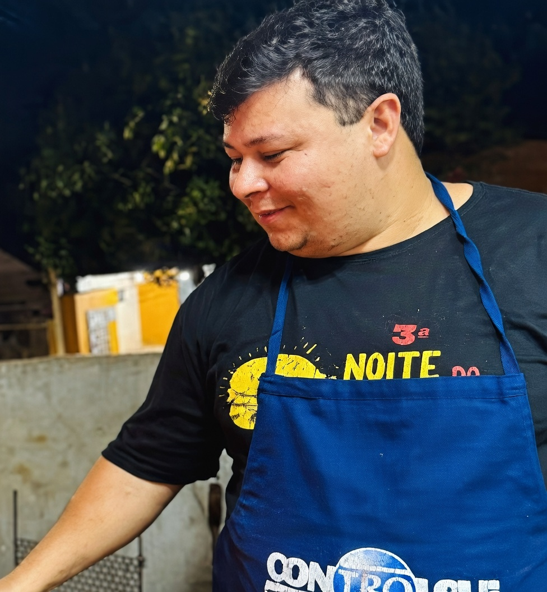

História do projeto
Origem fraterna
o primeiro evento nasceu para ajudar diretamente um irmão em tratamento
Legado preservado
a memória dos homenageados segue viva no propósito de cada edição
Evento anual
a ação se consolidou como compromisso da Loja Maçônica Arte & Ciência
Origem da Noite do Burger Solidário
Memória, fraternidade e continuidade
Uma noite que nasceu da união para ajudar.
A Noite do Burger Solidário começou como um gesto: irmãos se unindo em torno de um dos seus que precisava de ajuda. O que nasceu da necessidade se tornou um compromisso permanente com a solidariedade.
A trajetória do evento é também a história de duas pessoas cuja memória segue presente em cada edição: Giuseppe Prato, que inspirou o início de tudo, e Edno Gentilho Junior, que ajudou a construí-lo.
Em memória

Solidariedade que permanece
Cada edição da Noite do Burger Solidário honra quem acreditou primeiro que ajudar faz parte de quem somos.
Como tudo começou
A história em quatro capítulos: da urgência à tradição.
1ª Edição
A Noite do Burger Solidário nasceu de um gesto de fraternidade. O irmão Giuseppe Prato precisava de uma cirurgia na coluna e havia sido diagnosticado com câncer. Sem hesitar, os irmãos se uniram e organizaram o primeiro Burger Solidário — uma reunião em torno de quem precisava de apoio.
2ª Edição
No ano seguinte, Giuseppe enfrentou um novo diagnóstico. O evento voltou — desta vez com o apoio da Loja Prosperidade e com maior estrutura, organização e alcance. A solidariedade que havia começado como resposta a uma urgência ganhava forma de compromisso.
3ª Edição e a despedida
No terceiro ano, com Giuseppe ainda em tratamento, o evento aconteceu mais uma vez. Um dia após a realização, Giuseppe nos deixou. A perda foi seguida pelo falecimento do irmão Edno Gentilho Junior, que tanto havia contribuído para a construção das edições anteriores. Duas ausências que marcaram profundamente o espírito do projeto.
O legado
Diante dessas perdas, a Noite do Burger Solidário foi incorporada como evento anual permanente da Loja Maçônica Arte & Ciência. A cada edição, o projeto cresce — em arrecadação, em alcance e em significado. É a forma que encontramos de manter vivo o que Giuseppe e Edno representaram: a certeza de que ajudar faz parte de quem somos.
Giuseppe Prato
Em memória — inspiração do projetoEdno Gentilho Junior
Em memória — construtor do evento
Continuidade
Da origem à consolidação do evento.
Com o passar dos anos, o Burger Solidário deixou de ser apenas uma ação pontual e passou a representar um compromisso recorrente com causas relevantes. Cada edição ampliou o alcance, a visibilidade e o impacto social do projeto.
De 2023 a 2025, o valor arrecadado cresceu mais de 90%, consolidando uma trajetória que segue em expansão com a 7ª edição em 2026.
Páginas relacionadas